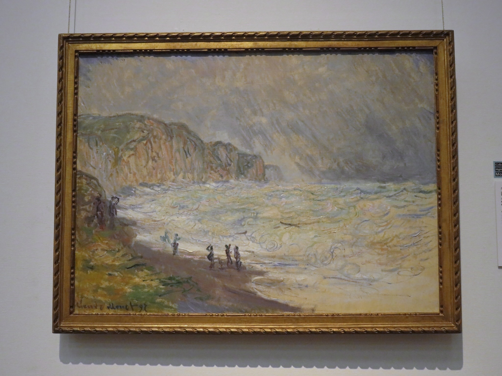
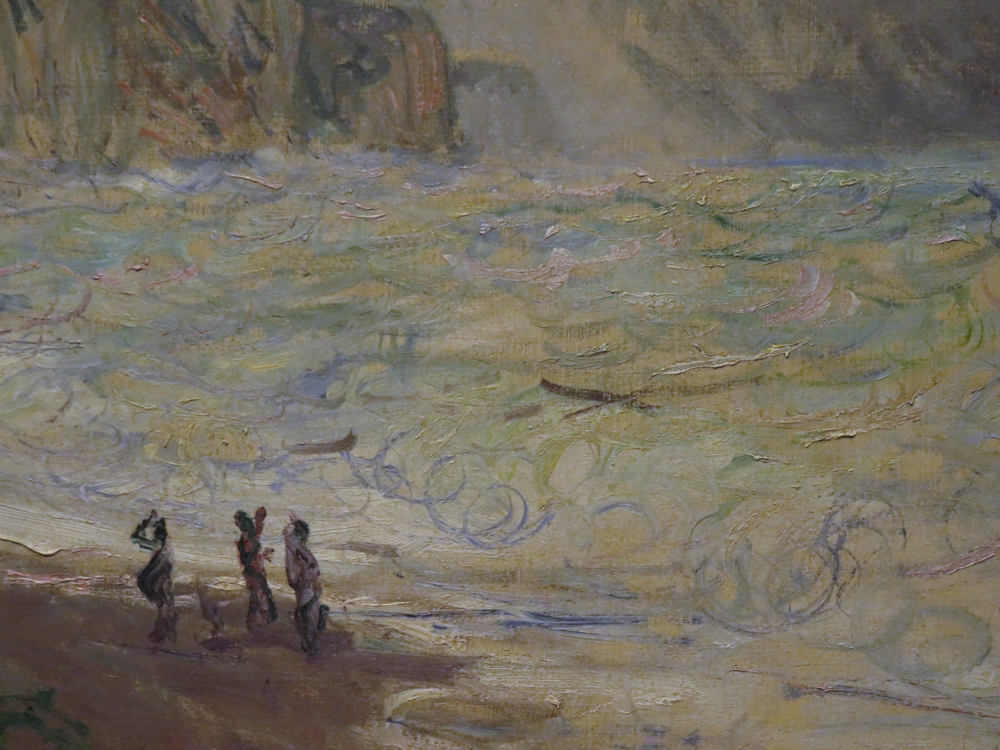

ながれ星をつかまえて
2026.09.24
お友だちがお友だちのお誕生日集まりに呼んでくれた。うれしい。誘われた時若干うだうだゴネたが、行ってよかった。そもそもすきな人間しかいないような場に誘われている段階で、素直に喜んで受ければいいものを！自分が人誘う時ゴネられたら困るくせに、何をそんなに不安がっているんだ！（ゴネ理由は「もしかしたら相手は2人で遊びたいと思っているのでは？」。自分が行くことによって誰かがマイナスの気持ちになる可能性があるかもしれないと思ってしまい、何かするより何もしない方が平和な未来に分岐する確率が高いのではないかとビビってゴネる。）
名前だけ聞いたことのあるバーだったけど、おもしろ楽しくてとっても素敵だった。よいマスター。かわいいお花。手品。ポップコーン。カウンターが暗くなったり明るくなったり、グラスに火がついたり。楽しませる欠片があちこちに散らばっている。上から降ってくるキラキラとか、うねうねしたグラスとか、どんな思いつきと成り行きで増えていったのだろう。あとやっぱり何よりお花もらえるのがいい。生花。かわいい色をしている。今おうちで大切に大切に育てている、朝顔のあさちゃんとそっくりな色。わたしが高校の卒業式で胸につけた花にも似ている。よい色だ。お家に帰って瓶に生けた。わたしはこのために昨日机の上を片付けたのだな。連休の最後だから掃除機くらいかけようという、普通の人みたいな感覚がここで生きた。たまには片付けとかした方がよい。
次もどこかで会うだろうお友だちには「またねー」、明日も会うお友だちとは「またあしたー」と別れた。会社の人間でもない人と「またあしたー」って言い合えることの楽しさよ！やっぱもっとお友だちとか増やした方がいい。出来たらやっとるがなという感じですが。
帰りに乗った山手線では、ホームで眉のない金髪ギャルがTikTokを撮っていた。久々に遅い時間のJR線に乗ったけど、人間の見た目がさまざますぎて圧倒される。変なひげ。変な服。変な顔色。面白いっちゃ面白いが、花を携えるちいちゃな女の子がいていい場所ではない。はやくおうちに帰りたかったぜ。
最寄りの駅を降りると天気や風がそこそこいい夜だったので、その後はご機嫌に帰宅。さっさと花を生けて次の日の支度。遊びの予定があるのでね。連日予定があるというのは珍しい。今月はたくさん遊んだ。来月もいっぱい遊びたい。すでに入っている予定も楽しみなものばかりだ。バーでおすそ分けしてもらった、手の甲にきらめくながれ星は、帰ってから逃げないようにつかまえて枕元のライトに貼りつけた。バーで「お祈りして！」と言われた時に、とっさに家族の無病息災を祈ったながれ星。げんきがいちばん。わたしがわるい夢を見ないように見守っていてね。
見てください、わたしの作品を
2026.09.23
このシルバーウィークで、だいぶホ〜ムペ〜ジが形になってきた。全く作ってないのはリンクのページだけ。まあここはすぐなんとかなるでしょう。デザインとかあんまりないしね。
出来上がったものをざっと見てみると、まじめっちゃいい。めっちゃいいやん。見た目も割とかわいいし、あちこちに花が咲いてるし、ボタンがいっぱいあって楽しい。AIはすごいぜ。こうしたい、こんなの作りたい、って言ったらある程度形にしてくれる。線の色をもうちょっと、ここのスペースを狭めてよいしょ、文字サイズあーだこーだと人間がうるさくしても即時対応してくれる。こんなに都合のいい存在がいていいのか？
だいぶ形になってきたので、そろそろカウンターなるものをつけてもよいのだが、わたしが自分の文章をすきすぎるが故に自分のアクセスだけでカウンターが回っていくのがやや恥ずかしい。別にいいけども。ホームページ、わたしのすきなことしか書いてないのでどこ読んでもおもろい。100%共感できる。中身もっと増やしたいねえ。たからばこの項目ももっと増やしたい。わたしの好きなものをどかどか並べて楽しめるなんて、なんて素敵なんでしょう。本当は人にじぶんのすきなものを喋りまくるのは得意ではないんだが、どうせそんなに大勢見ないだろうし、ここにだけならすきなもの大公開してもいいな。
早々に飽きる未来もなくはないので、勢いに乗っているうちにある程度増やしてしまいたい。もちろん続けたい気持ちはあるけど、どうなるかわかりませんからね。しかも次の季節は冬。寒いの苦手や。頭が冬眠してしまう。まぶたが重たくなる前に、すきだったゲームや番組、YouTubeについて書いてしまおう！
まあでも、明日からやるか。今日ちょっとゲームしよかな。寒いし。眠いし。またあしたー。
気狂いじゃないと遊んでもらえないんだ（愚痴回）
2026.09.22
ここ最近のわたしは外出づいている。今月の15日にはなんと！ディズニーランドへ行ってきました。がんばってお金貯めて行きました。お金を貯めるなんて、えらい。この日のためにディズニー用のネイルをしたり、当日起きれるようあらかじめ早起きの練習をしたり、そしてディズニーが終わってお家に帰ってきてから数日なかなか疲れが取れずぐったりしていたので、帰ってから書くまでに時間が空いたのです。しかし連休だからもう書けます。書きまーす。
この日は元職場の先輩お姉さんとご一緒しました。先輩とは以前にも2人でディズニーに行った経験がある仲なので、そこまで不安ではありません。しかし今回のディズニーはパレードが目的。パレードをいい位置で見るために朝イチで入園して場所取りをしますが、なんとパレードの開始が16:55なのです。朝から夕方まで座っていたら何もできない！ので、先輩お姉さんが場所取り要員としてTwitterで仲間を探して1人連れてきてくださいました。Twitterで「募集 9/15スニーク 当方始発舞浜着 ポジ問いません」みたいに募って繋がった方で、わたしともお姉さんとも面識はなく、当日が初対面。パレードが始まるまでの時間、3人で場所取り係を交代し、乗り物に乗ったりお買い物したりしようねという話です。最近のディズニーではこういうことがある。恐ろしすぎ。
とはいえ遊べる時間は増えるのだし、仲間お姉さんはパレードの鑑賞位置を指定する代わりに我々より長い時間待機してくれるため（こわ、なんで？）、我々にデメリットなし。土砂降りの朝、ディズニーの待機列にて仲間と合流します。
この仲間お姉さんが来たことによって、わたしが悲しい思いをしたのだ。こんなことなら1人で来ればよかった！！会社お姉さんと仲間お姉さんが、わたしを1人置いてけぼりにしてずーっと2人で話しているのだから！！
お2人は元々KPOPのオタクをやっていたそうで、そのせいかディズニーの楽しみ方がかなりオタク寄り。キャラクターととにかく会いたい。キャラクターと話したい（ミッキー含む一部のキャラクターは、喋らない）。ダンサーを追いたい。ダンサーのシフトを把握して（もちろんそんなものは公開されていない、オタク同士のオープンチャットで密やかに共有されているらしい）推しのダンサーが出ている時に顔面を拝みたい。そういうディズニーの楽しみ方をしているらしい。もちろんディズニーには月に数回訪れ、アトラクションには目もくれず、1日のうちにミッキーとタイマンで話せる家（正くは家ではなくスタジオだが、まどろっこしいので家と表現する）にひたすら何度も突撃したり、出てくるかどうかもわからないキャラクターを道の真ん中で出待ちしたりする遊び方をしている人たちだったのだ。わたしは全然違うので、「わーっ知らない世界だなあ」という相槌を打つ。すると2人は「いやー！それが普通の人の楽しみ方！素晴らしい！健康的！そうであるべきですよね！！我々と違って！！ね、いやー！あなたが正しいです！！」と返す。わたしとの会話終わり。なんだこれ。は？わたしが悪いんか？？？
一日中ずっとそんな雰囲気で、パレードが終わるまで3人の時間は「え、けーぽなら誰推し！？」「え〇〇のライブ行った？」「えやばいそのグルのハイタッチ会シリアル買いまくったww」「最近のダンサーだとこの人が推し！最近海ばっかで陸来てないんだよねー」「えこのチッケム見てほしい！ガチで顔がいい！」等わたしの知らない会話が繰り広げられていた。何語？そんなんならもう1人で動きたいが、流石に元先輩を放置するのはわたしの気遣いの部分が許さない。にこにこ笑顔で話を聞いているふりをするしかない。おいディズニーで何でこんな気持ちにならにゃいかん。帰りたい。
他にもいっぱい嫌なことがあったが（かわいそう）、とにかくこの時間が苦痛だった。最近のこの、とにかく金を減らして破滅に向かう推し活こそおもしろい！気狂いこそ正義であり、時間と金を推しのために無限に支払える人間こそ正である！みたいな風潮はとても息苦しい。この一日中、わたしは推しもいなけりゃ金も出せないつまらない人間としてぷらぷらしたのでした。パンピなので。みじめ。
ちなみにミッキーの家へ突撃する時に一緒に連れて行ってもらったが、正直良さはよくわからなかった。空気を読んで行動することはできるので、ミッキーと楽しくおしゃべり♪して一緒に写真を撮ったはいいものの、グリ（グリーティング。キャラクターと喋ったりすること）の動画撮ったよ〜！！と先輩から送っていただいた自分の動画を見たらあまりにも滑稽だった。ばかみたいだ。すぐ消した。でも先輩は「あんなに長時間喋ってくれるミッキーは当たりだよ！」と言っていた。ミッキーに当たり外れねえよ。
以前母親と一緒にディズニーに行った時に道すがら出会ったデイジーちゃん（ドナルドの女版）はあんなに可愛くて、手を振ったり話しかけたりして楽しく過ごせたのに、今回のように人に「この楽しみ方をしろ！」と強いられた途端何もおもしろくない。わたしが天邪鬼なのかしら。
ずっと思うようにいかなかったけれど、それでもエレクトリカルパレードはほんとうによかった。今日は成り行きで見ることになったけれど、いつもは座って見るくらい、わたしはこのパレードがとってもだいすき。小学校1年生だかそれくらいだかの、まだ何も知らない幸せだった小さなわたしが、曲に合わせて手を叩きキャラに向かって手を振り続ける記憶だけが永遠に残っている。帰りに手が痛い疲れたと親に甘えながら帰ったあの日のことだけ、鮮明に覚えている。ディズニーランドはわたしを子どもにしてくれよ。
流石に帰宅直後〜翌日あたりまでは「タノシカッター」とぼんやり思っていたが、写真を見返して細部を思い出すにつれ「一体何だったんだろう」としょんぼりするようになってしまった。次は1人で行くか、もっと一緒に乗り物とか乗ったりワイワイ楽しんでくれる、「あのミッキー当たりだよ！」とか言わない人間と行きたい。そもそも初対面の人間と一緒にいなきゃいけない時間がある時点でおかしいのだ。気が狂っている！
いつかリベンジしたい……と思っていたところ、ひょんなことからディズニーシーの3時間限定チケットを何故か無料でお譲りいただいた。お酒をよく飲むお兄さんありがとう。一緒に乗り物とか乗ったりワイワイ楽しんでくれそうな、ごきげんな友人を誘って行くつもり。あー楽しみ！！こんなことってあるんだ！！
この日のお出かけログ。
2:50 起床
3:50 出発
5:11 舞浜着
8:45 開園、即場所取り
9:00 ドナルドの家/先輩
9:10 デイジーの家/先輩
9:30 ビッグサンダーマウンテン/先輩
9:40 道端のジェシーとグリ/先輩
9:45 道端のウッディとグリ/先輩
9:50 3人分のアイスを買いにお店へ/先輩
9:55 先輩を並ばせてスターツアーズ/ソロ（超楽しい）
10:25 アイス受け取り、待機している女の子に届けに行く
10:30 キャラクター出待ちのためエントランスへ/先輩
10:45 キャラクター出待ちのためよくわからない通路へ/先輩
11:00 女の子と待機要員交代のためパレード待ち位置へ
11:40 先輩が届けてくれたお昼を食べる
12:40 遊びに行っていいよとのことで、蒸気船マークトウェイン号/ソロ（超楽しい）
13:00 走って戻る
13:20 お昼のパレード開始、3人で鑑賞
13:50 パレード終了、キャラクター出待ちのためよくわからない通路へ/先輩
14:10 ホーンテッドマンション/先輩
14:25 キャッスルカルーセル/先輩
14:35 ミートミッキー/先輩
15:10 ガジェットのゴーコースター/先輩
この後「実は酔うようになってしまい乗り物に乗れない」と言われる 先に教えてほしい
15:20 酔った先輩を置き去りにロジャーラビットのカートゥーンスピン/ソロ
15:45 通り道でグリ/先輩
16:15 ワールドバザールにて記念撮影/先輩
16:20 お土産下見/ソロ
16:45 パレードのため待機場所へ
17:10 パレード開始
17:50 カリブの海賊/先輩
18:20 お買いもの/先輩
18:40 先輩に晩ご飯のお店へ並んでもらい、お土産のお買いもの/ソロ
18:55 晩ご飯@チャイナボイジャー/先輩
19:30 ちょうど店を出たところでエレクトリカルパレードが開始、立ち見/先輩
20:20 帰る間際に「すみません！一個だけ乗り物乗りたいです！」とスターツアーズへ/ソロ
20:45 行きしなペットボトルを落としたので届いてないか一応確認
20:50 エントランスにて花火を見る
21:00 閉園、解散
秋は夕暮れ世は情け
2026.09.18
今日いい夜だった〜〜。いい夜すぎて、人に会った瞬間「今日はいい夜ですよ」と言ってしまった。だっていい夜だったんだもの。
先週の土曜日はのっぴきならない理由で外出し（美容院切り直し事件、これについても書きたいんだ！）、日曜日はディズニーに向けてのネイルで丸一日潰れてしまい、月曜に働き、火曜日にディズニー行って水木金と働いたのだ。稼働しすぎである。流石にくたびれたので、華金仕事帰りに東京国立博物館へ行きました。わたしの心のよりどころ。
上野駅から公園を通り過ぎてゆく。すると、すごいんですよ。秋の虫。めっちゃ鳴いてる。
あらいい音と思いながら博物館へ入って、うろうろしながら絵などを見ます。今日は「わたしはこの絵を見るためにここへ来たんだ！！」と思えるような好みの作品を見つけることができたので大きな収穫です。すきな絵を見つけた時のあの感覚はどう言い表せばよいものか。自分の場合は、強い風を前から浴びてのけ反る感覚とか、眩しい光を前にして目がくらむ感覚とか、そんなものに近い。最初にそういった「うわ！！」があって、その後は「うーむ素晴らしい、うわー素敵すぎる、うーむ」と唸りまくるターンに入る。今日も例に漏れずうむうむしながら鑑賞し、いい気持ちになりました。わたしが今日うむうむした絵はこちら→（後で足します）
東博は金曜と土曜に夜間開館を行っており、仕事終わりでも展示品をゆっくり見られます。わたしのような底辺アルバイトでも、残業終わりにゆったり博物館巡りができるというわけです。ただし東博の庭園に入れるのは通常の日と同じ17時まで。庭園に面したお部屋に辿り着き、部屋の中でも虫の鳴き声が聞こえるなあ、夜でもお庭に出られたら素敵だろうにと思いながら窓の外を見たら、なんと庭が青々とライトアップされていたのです。初めて見た。もしかするとライトアップではなく何か理由があって色のついた明かりで照らしているのかもしれないけど、なんだか秘密をのぞいてしまった気分。東博のお庭には別の姿があるらしい。うちの庭にも……作るか……？夜間庭園を……。
そのうち閉館時間の20時になったので建物を出る。するとまた、虫の声。秋度が高まりすぎている。あまりにも秋なので、気分もいいしちょっと散歩してから寄り道先へ行くことに。上野公園から不忍池まで下りて、弁天堂を突っ切り池を横断。夜の不忍池からはいろんな音がする。大音量で喋る外国人の電話、ホテルに行くか帰るかの瀬戸際で揺れる若いカップルのやり取り、ベンチで酒飲むおねーさん2人組のはしゃぎ声、池見て佇むスーツ姿のおっちゃんが飲む缶ビール、そして秋の虫。上野はこの全てを受け入れてくれる感じがよい。わたしも気取らずにここを歩くことができるし、割と何をしても浮かない。許してもらえる感覚がある。そういうところがありがたい。雑多な雰囲気の居心地がよくて、上野に訪れる日々はなんだかんだ6、7年続いている。なんかちょっと蒲田みたいな雰囲気がある気がするんだよなあ。上野は蒲田ほどの地元卍感はないし、蒲田の方がもっとくたびれてるけど（セリアの入ってるビルやばすぎる）、雑多度でいえば似ている気がする。上野で仕事してた時が一番楽しかったなあ。過ぎ去った時間は元には戻らないもの。諸行無常。
弁天堂から池を横断する道すがら、虫の鳴き声が入った動画を撮って、後で聴けるようにした。こういうのはなんぼあってもいいですからね。夜を切り取って満足し、うろちょろしていたら不忍池の中で道に迷う（どうやって？？）。わたしはビビンパ方面へ行きたいんですけど〜……とふらふら歩いていたら、ふわっと甘いにおいがする。あれ、と見回すとこんなところにキンモクセイが咲いていた。もうすっかり秋じゃんね。
歩きやすくて、いい音がして、いいにおいがして、あまりに秋。今日はとっても気分がいい。いい絵も見れたし、せっかくだから甘いものとか飲みたいな。ということで、業スーにてオレンジジュースを買い、寄り道先で氷と一緒にコップに入れてもらって美味しく飲んだという一日でした。素晴らしい出来栄え。歩き回っていたのだから身体の疲れは取れないけれど、中身はかなり回復できました。秋、いいね。
ちなみにその後何故か予想外のプレゼントを貰う約束をして、さらによい日になりました。いぇーい。
この庭はぼくの庭だぞ！
2026.09.08
庭すきなんだよね。といいながら、庭で遊んだ経験は一度くらいしかないのですが。自分の家にもおばあちゃん家にも庭はなかったし、遊んだ記憶といえばお友だちの家の庭でハンモックにちょっと転がってみたくらい。庭の現物はよく知らないけど、庭が登場する本はいくつか読んだことがある。物語に出てくる庭たちはどれも美しく素晴らしく、本の中の描写だけで、わたしはその存在にすっかり憧れてしまったのでした。
庭というのは「自分の土地」ですからね。慣れてる土地のことを「ここは俺の庭だぜ！」とか言うでしょ。庭ってのは、自分の場所。何したっていい。しかも「庭いじり」という趣味は若者から老人にまで認められている。パパのDIYからおじいちゃんの盆栽まで幅広い。お母さんの家庭菜園だってできるし、地面を耕したりさつまいもを掘ったりするくらいなら子どもでもできる。庭の対象年齢はほんとうに無限大なのです。
わたしの憧れの庭第一号は、厳密に言うとそもそも庭ではないんですが（破綻）、お気に入りの本の中で、ちいちゃな小山を借りた主人公が山のなかで草を刈ったり道を作ったり、ならした地面に小屋を作ったりして夏を過ごすんですよ。自分の場所という意味では、庭なのかも。お気に入りの椿の枝があって、川が流れていて、時々小鳥や妖精が迷い込むような、そして大勢には見つからないような、秘密の場所。あ、あ、憧れすぎる。ちなみに小山の話は「だれも知らない小さな国」という本のことなのですが、確か同じ作者の他の本でも、男の子が庭に小屋を作っていたな。動物や妖精が迷い込んでいた。小山の人は夏を過ごしていたけど、こっちは確か冬を過ごしていなかったっけなあ。どちらにせよ羨ましい。マイクラとか流行る前はみんな庭に小屋を作っていたのかもしれない。
庭というのはイメージ的にはある程度開けたスペースではありますが、外からはあんまり見えないからね。椿の枝に腰掛けて、ゆったり本を読んだって誰も文句を言わない。もちの木をいじわるな子に取られることもない。柵で仕切られているだけの庭、木々に囲まれた庭、壁に囲まれて完全に閉ざされた庭、様相は多岐に渡りますが、大抵はある程度閉ざされています。お外からじゃまされることのない自分だけの場所であることが多いですね。素晴らしい。みんなには、ないしょ。
……ただし、ほんとうに時々なら……来訪者はあってもいいかもしれないな。
せいたかさんの小山におちびさんが来たように、メアリの庭にディコンが来たように、ムスターシュおじいさんの庭にチトが来たように、ジュンの庭に蜂山十五が来たように、出会いがあったっていい。自分の部屋も閉ざされていて安心できる素敵な場所ではあるけど、お部屋に出会いはないですからね。物語をおもしろくするのは予測のできない来訪者。閉ざされた庭を見つける素養のあるものであれば、庭に来てもよいかもしれない、と思います。
ところで、庭といえば花。わたしのすきな本「みどりのゆび」では、おやゆびを押し当てるだけで何もない場所から花を咲かせることができる、天使のような少年が登場します。彼は心優しい庭師のおじいさんに出会い、素敵なお庭を見て「もっと世の中も花とか咲いてたほうがいいな」という理由で刑務所や病院を花畑にしてしまいます。一晩のうちに突然現れた一面の花を目にした刑務所の囚人は、花を眺めているうちに心が穏やかになり、ある朝目が覚めると自分の周りが花畑になっていた病院の患者は、生きることに対して前向きになるのです。花は咲いた場所や見る人を明るくしてくれる。いい話すぎる〜。
「秘密の花園」でも、メアリが閉ざされた庭を見つけて花を育て、荒れた庭を美しく直していくうちに、つむじまがりだった性格がほんの少しずつ素直でかわいい女の子に近づき、後半では人に前向きに生きることを説くようにすら変わっていくのです。メアリの場合は、出会ったお友だちのおかげというのもあるけれど。にしたって花の持つ力はすごいよ。その花を植えたりすることができるのが、庭。全人類庭を持つべきなんじゃなかろうか。庭ってすごいし、花ってすごい。希望になりうるのだ。
まあ実際、何もない病院の壁から一晩で花が咲くことがこの世にあり得るのかよ、と聞かれたらそれは今のところわからない。そんな夢みたいな話はないと言う人ももちろんおります。でも、近しい現実はあってほしい。誰かが花を咲かせるだけで他の誰かがうれしい気持ちになる、そんな世界ならあるかもしれないよね。学校の花壇とか、花が咲いてたら誰かしら1人くらいはきっと立ち止まったりしてるもの。花見とかもそう。花が咲いていると、何もなかったはずの場所に人が集まったり、楽しい雰囲気になったりする。どこかに花が咲くだけで、刑務所や病院に直接花を咲かせるまでいかなくとも、少しだけ世界にうれしい人を増やせるかもしれません。園芸少年という本でだって、おやゆびの魔法も何も持ち合わせないふつうの男の子たちが、お花のおかげで素敵な時間を過ごすのを読んだし。また本の話してる。
例え話のほぼ全てがわたしのすきな本の引用なので、誰かがこれを読んだとてわからん可能性は大いにありますが、なんかそういう概念とか、なんかそういう空間とか、そういうのがすきな人間ですよという紹介でした。庭、いいよね。花、いいよね。そういう話。色々書きましたが、現実の庭は、虫とか湧くから……一旦わたしのお庭はここということで。すきな花を植えて、なんかかわいい置物とか置いて、その後水を撒きやすいようにホースを繋いだり、そのうち地面をもっと整備したり、お野菜を植えてみたり……。そんなふうに少しずつものを増やしたり見やすいようにできればいいですね。まあでも続くかわからんので荒廃する可能性もあります。とりあえずしばらくはある程度整えておこうと思いますので、気ままに来訪してください。
西洋美術はもっと服着た方がいい
2026.09.07
開始2回目でもう普通に日記書き始めますけど、今日は国立西洋美術館へお友だちを連れて行く任務を遂行してきました。わたしは西洋美術にほぼ全く興味がないのですが、逆にお友だちは日本美術を見ても何も面白くないし、モネとか見たいとのことで、今回はお友だちのご機嫌をとるべくこの機にご一緒しました。今回はお友だちに元気がないため、わたしの方が付き合います。でもここ数年ずっと相手のご機嫌とりデートしかしてないので、そろそろわたしの好きなところにも着いてきてほしいところではある。
チケットを購入して常設展だけ見てきたのですが、西洋美術ってまじで裸の人間多すぎる。彫刻も裸、絵画も裸。しかも大概写実的なので、生身の人間のようなリアルな視線がいくつもこちらに向いている。疲れるがな。土曜日で人が多かったことと絵画からの視線を多数浴びたことにより人酔いし、楽しそうに鑑賞するお友だちをよそ目に一人ベンチで休んでおりました。西美のベンチ初めて座ったけど固くてきらい。あと西洋美術、なんか懐妊だの斬首だの裸体だの全てが生々しくて気持ち悪い（※個人の意見です）。なんで全部、裸かペラペラの布をファサとかけただけの格好なんだ。服着ろ服。
生々コーナーを越えるとモネが待っています。やたらもてはやされているので、モネはそんなにいいものなのかと来てみましたが、まじで全てがぼやぼやしている。もっと描けるだろモネ。もっといけるだろ。本気出して描け！という気持ちになります。ちなみにわたしはほぼ何も描けません。ねこくらいなら描けるかな。
これは完全に好みの問題なので、日本美術を上げて西洋美術を下げる意図はなく、単に好き嫌いの話として読んでいただきたいのですが、西洋美術に多い油彩画というものはスケールが大きくて大味になるような気がしてしまうのです。個人的には「神は細部に宿る」と思っているため、美術品にはスケールよりも緻密さを求めてしまうんですね。そうすると浮世絵とか、花鳥図とか、図譜とか、そういったものに心惹かれてしまうのです。美術品は生で見た時に近くに寄って細部まで見るのがおもしろい。写真には映らない美しさがあるから〜〜、ということ。西洋美術はしばしば、現物よりもグッズに貼り付いている作品の写真の方が綺麗に見える現象が起こる気がします。印刷することにより絵画を実物より低い画質で見ることになり、その結果「遠くから見ることにより美しく見える油彩画」が引き立つのです。これは持論なので別に正しくはないです。
でもさあちょっとモネを見ていただきたい。どうなのこれ？？遠くから見ても流石にわからんくない？

それにこの ののの みたいな筆の運び。これ許されるの？もっとちゃんと描いてよ！

やっぱり東博ですよ。広いし、でかい本棚もあるし、ベンチふかふかだし、座るとこいっぱいある（最近展示ケースが消えてその場所にベンチが増えたのはNO）。レストランも複数あるし、なんとその他にめし食えるスペースが屋内と屋外両方にあり、多少なら持ち込んでも文句を言われない。庭もあるし花も咲く。西美は建物も客もグッズでさえ気取っていてなんだか居心地が悪い。東博はよい。日本美術の「に」の字もわからん外国人が、甲冑の写真を撮って楽しそうにしている。こういうのでいいんだよ。西美は彼氏が彼女にあっさい解説してる景色とかが多すぎて辟易した。東博と西美のこの客層の違いは、一体何？裸体が多いとカップルにウケるのか？？やっぱりえっちな方が大衆にウケるのだろうか。まあ埴輪見て興奮する人って専門家以外にいないもんな。やっぱ顔とか描いてある絵の方が楽しいんかな。つーかあんなにはだかんぼの絵ばっか飾って怒られないの？？流石に裸すぎない？？
西洋美術の良さがわかる人はわたしに説いてほしい。色彩が〜とか言われても、いや川瀬巴水や吉田博の版画の方がよっぽど綺麗な色だが……？とか思ってしまう。若冲の描く花鳥図もよっぽど色彩豊かだが……？先月大ゴッホ展で「夜のカフェテラス」を見たが、正直良さがようわからんかった。グッズに貼り付けてある作品の写真の方が色鮮やかに見えた。ゴッホで感動できなければ終わりである。しかしこんなわたしでも「おっこれは」と思えるような、ちょっと気にいる絵画を今回3作品見つけたのでした。こんだけ文句垂れといて、まあまあある。
ドクロのやつ
ぼやぼやしがちな西洋美術の中でも静物画は割と細かいところまで描いてくれるため、わたしの好みに合いやすい気がする。この絵は見ていて面白いなと思った。特にこのつぶつぶ。こういう細かな描写に「おお」となるのです。より近くで見たくなる。こだわりを感じる。
点描1
これもよかった。点描的な形式で描かれた港の絵。これは色が綺麗だと思った。わかりやすく色が綺麗。ゴッホと何が違うんだと言われたら自分には説明できないけど、なんか明るくてすきだった。
点描2
こっちは写真撮っちゃいけなかったけど、3作品の中で一番気に入った。それこそ色がとっても綺麗。色が散らからず作品としてまとまりを感じる。画面がうるさくなく、適度に余白があって見ていて疲れないし飽きない。海のきらめきや空のグラデーションを描くことで、点描であることにちゃんと意味を感じる。近くで見てもおもしろい。色使いがかなり現代的な気もしますね。
撮った写真を見返すと「これなら見ててもそんなに嫌じゃないかも」は他にも何点かありましたが、頑張らなくても思い出せるくらいに印象に残ったのはこの3点。しかしやっぱりどうしてもわたしは日本美術がすきだなあと思うのでした。余白の美とはよく言ったもので、海の向こうの壁画のように壁一面天使と裸の女性で華美に埋め尽くすよりも、縦長の紙に鯉一匹の方がうっとりしてしまう。そこに何も描かれないことにより、季節やその空間の温度、湿度、静けさを自分で好き勝手に想像できるのだ。
ここまで書いてやっとわかったのだけど、西洋美術は「その絵画の中に入りたい」と思えないから惹かれないのかも。血みどろのキリスト、半身が獣の神様、裸まみれの水辺、ゼウスに襲われる女性たち。どれも楽園には程遠い。あとモネはぼやけてて景色がよう見えん。日本画は花鳥図の中で花を愛で、山水図で静かな山あいの風景を味わい、墨で描かれた輪郭の犬を撫で、一匹の鯉が跳ねる掛け軸の前で水の音に耳を澄ますことができるのです。なんかあれだね。想像力を使ってあれこれ勝手に考えるのが好きな人間は余白のある芸術を好む傾向にあるのでは。逆に現実主義の人間は西洋画を好みそうな気がする。今日一緒に行ったお友だちは割と現実主義的なところがあるし。神話を「あったこと」として捉えるのであれば、西洋画は全て現実を描いていますからね。対して日本画は百鬼夜行とか描いちゃう。ふわふわにデフォルメされた犬も描いちゃう。おちゃめすぎ。おれは遊び心のある絵がすきなんだ。
西美のベンチが固くてイラついたのをきっかけにこの文章を書き始めたけど、ちょうどこの日に「最近文章が書けなくて」と人に相談したとは思えない文章量である。3000字近く書いている。二回目でこんなに書いてしまって果たしてこの先続くのか？もう続かないんじゃないか？日記ってもっと、ゆるくやった方がいいんじゃないですか。もう遅いですけど。
みんな東博に行こう。東博は庭とかあるし。花とか咲く。モネなんか見ている場合ではないんだ。スニーカー履いて東博に行こう。おしまい
お庭ができました
2026.09.03
正確には、お庭ができたのは8/30なんですけど。
お友だちとしゃべっているときに「ホームページ作るしかない」と言われてとうとう作りました。お友だち！見てますか！
HTMLとかCSSとか本当にわからないので全部chatGPTが作っている。ほんとうにすごいねえAIは。まじで、謝辞のところに名前を添えなきゃいけないくらい全てを任せている。
いまんとこチャピ子がいないとまじで何も更新ができないので、もうちょっと勉強しなきゃだなあと思っています。htmlで覚えたこと、改行と段落しかない。伸びしろだらけということ。イイネ！